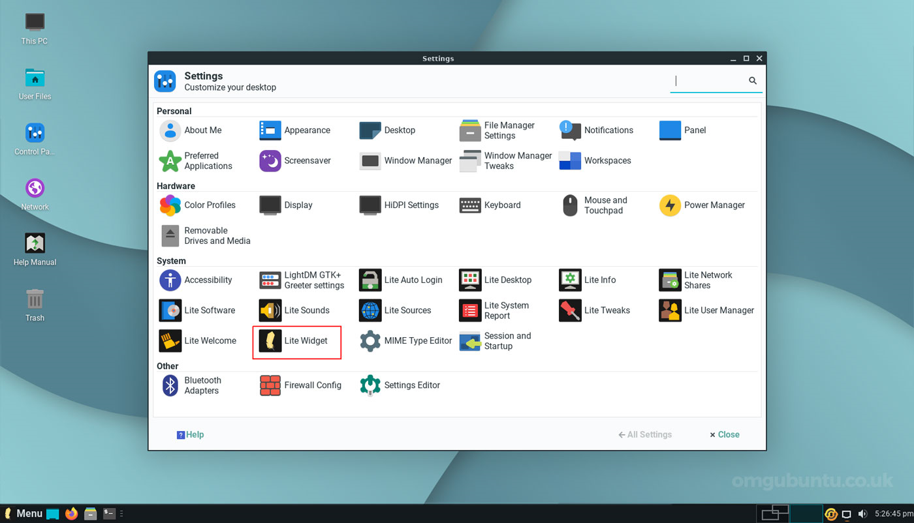

Linux Lite
Linux Lite is a Linux distribution, based on Debian and Ubuntu and created by a team led by Jerry Bezencon. The distribution offers a lightweight desktop experience with a customized Xfce desktop environment. It includes a set of Lite applications to make things easier for a novice Linux user.
Linux Lite was created to make the transition from MS Windows to a Linux-based operating system as smooth as possible (especially to users of no-longer supported versions). Linux Lite follows the Unix philosophy in regards to software selection and programming as it applies to the modern era - Write programs that do one thing and do it well.

Linux Lite
Linux Lite began in 2013 with the release of Linux Lite 1.0.0, code-named "Amethyst", based on Ubuntu. It was initially developed and designed to attract Windows users to a Linux based operating system. The idea was to dispel myths that Linux was hard to use.
Linux Lite started out with a number system made up of the following - 1.0.0 The '1' represented the base code from Ubuntu i.e. '1' meant the Ubuntu 12.04 LTS base. The second number '0' represented the interim Ubuntu LTS release i.e. '0' meant 12.04.1 The third number '0' represented any point releases thereafter. For the 2.x Series, the third number was dropped as point releases were not required.